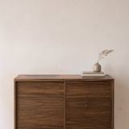

Gallery › SoldSold Paintings that have found homes.
Shown in a typical mount and frame, which are not included. The painting itself is 52 × 21 cm. Above a cabinet about 90 cm wide. The room is an illustration.
The painting 
On a wallMarsh Irises by Moonlight Medium Watercolour on paper Size 52 × 21 cm Year 1990s Price Sold Catalogue no. 23 Link to share
Shown at its real size, 44 × 34 cm. Above a cabinet about 90 cm wide. The room is an illustration.
The painting On a wall
A Country Path Medium Oil on canvas board Size 44 × 34 cm Year 2018 Price Sold Catalogue no. 30 Link to share
Shown at its real size, 27 × 37 cm. Above a cabinet about 90 cm wide. The room is an illustration.
The painting On a wall
Moonlit Seascape Medium Oil on canvas board Size 27 × 37 cm Year 2021 Price Sold Catalogue no. 48 Link to share
Inside the Wave Medium Oil on canvas board Year 2021 Price Sold Catalogue no. 49 Link to share
Shown at its real size, 44 × 32 cm. Above a cabinet about 90 cm wide. The room is an illustration.
The painting On a wall
Three Birch Trees in Autumn Medium Oil on canvas board Size 44 × 32 cm Year 2015 Price Sold Catalogue no. 104 Link to share
Shown at its real size, 45 × 35 cm. Above a cabinet about 90 cm wide. The room is an illustration.
The painting On a wall
Landscape with Birch Trees Medium Oil on canvas board Size 45 × 35 cm Year 2008 Inspired by Hampshire Price Sold Catalogue no. 114 Landscape with birch trees in Hampshire, England. Again, the interest here is the white of the tree bark against the green background of trees and fields.
Link to share
Two Dogs in the Pea Fields Medium Oil on canvas board Price Sold Catalogue no. 124 Link to share
Shown at its real size, 20 × 30 cm. Above a cabinet about 90 cm wide. The room is an illustration.
The painting On a wall
Birch Trees in Spring with Dandelions Medium Oil on canvas board Size 20 × 30 cm Price Sold Catalogue no. 139 Link to share
Trees in Wood Medium Watercolour on paper Price Sold Catalogue no. 140 Link to share
Birches in autumn Medium Oil on canvas board Price Sold Catalogue no. 177 Link to share
Redroofed barn - France Medium Watercolour on paper Year 2010 Inspired by France Price Sold Catalogue no. 179 A countryside scene based on a photograph but extensively changed. Painted in watercolour, with the use of masking fluid for the blossom.
Link to share
Bluebells in the hedgerow Medium Oil on canvas board Year 2018 Price Sold Catalogue no. 191 Link to share
Study of three Shells Medium Watercolour on paper Year 1990s Price Sold Catalogue no. 197 Link to share
Shown framed. The painting itself is 21 × 31 cm. Above a cabinet about 90 cm wide. The room is an illustration.
The painting On a wall
Steph's Shell Medium Watercolour and pencil on paper Size 21 × 31 cm Year 2010 Price Sold Catalogue no. 206 Link to share
Lavender field near Petersfield Inspired by Near Petersfield, Hampshire Price Sold Catalogue no. 238 Link to share
× Close Other galleries: Landscapes Figurative work Botanical work Watercolours of the imagination Still life Illustrated poems Sea imaginings Paintings for sale